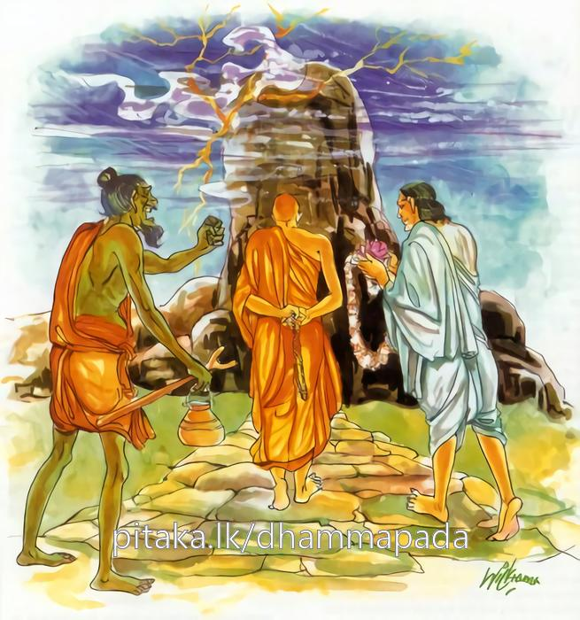

6-6 ලකුණ්ටකභද්දිය ස්ථවිරයන් වහන්සේ
මෙම කතාව ධම්මපද අටුවාවෙන් ද කියවන්න.
සෙලො යථා එකඝනො වාතෙන න සමීරති
එවං නින්දාපසංසාසු න සමිඤ්ජන්ති පණ්ඩිතා.
ඒකඝන වූ ශෛලපර්වතය ප්රචණ්ඩ වාතයෙන් යම්සේ නො සැලේ ද, එපරිදි ම නුවණැත්තෝ නින්දා ප්රශංසා දෙක්හි නො සැලෙත්.

මේ සසුනෙහි විසූ තෙරුන් අතුරෙහි ඉතා මිටිවූවෝ ලකුණ්ටක භද්දිය ස්ථවිරයන් වහන්සේ ය. පෙර සසර ඇවිදින කාලයෙහි, අන්යයකු මහත් කොට කරන්නට පිළියෙල කළ පින් කමක් කුඩා කොට කරවීම උන්වහන්සේගේ මිටිකමට කරුණු විය. ශීලසමාධ්යාදිගුණ නො දත් පුහුදුන් කුඩා උන්නාන්සේලා තෙරුන් දුටු කල්හි, අතින් බෙල්ලෙන් කණින් නැහැයෙන් අල්ලා ‘කොහොම ද, පුංචි බාප්පේ! කොයිබ ද යන්නේ’ යි කියමින්නේ කෙළිකවටකම් කෙරෙති. එහෙත් උන්වහන්සේ ඒ කිසිවකු කෙරෙහි නො කිපෙති. අමනාපයක් නො ද උපදවති. දිනෙක දම්සබාවට රැස් වූ භික්ෂූන් වහන්සේලා ‘බලන්න, කිසිවක් නො දත් මේ කුඩා හෙරණහු අතින් පයින් ඔලුවෙන් බෙල්ලෙන් කණින් නැහැයෙන් අල්ලා කොහොමද, පුංචිබාප්පේ’ යි කියමින් ලකුණ්ටක භද්දිය තෙරුන්ට වෙහෙස කරත්, කෙළිකවටකම් කරත්, එහෙත් ඒ තෙරුන් වහන්සේ ඒ කිසිවකු කෙරෙහි නො කිපෙති, අමනාප නො වෙති’ සි කතා කරමින් හුන්හ. මේ වේලාවෙහි බුදුරජානන් වහන්සේ එහි වැඩ ‘තමුසේලා කියන්නහු කුමක් දැ’ යි ඇසූහ. භික්ෂූන් වහන්සේලා ඒ සියලු තොරතුරු දැන් වූහ. එවිට උන් වහන්සේ ‘ඔව්! මහණෙනි! මාගේ පුතා ලකුණ්ටක භද්දිය, රහත් තැනකි, රහත්හු, කිසිවකු කෙරෙහි නො කිපෙති, දොස් පහළ නො කරති, රහත්හු, ඝන වූ ගල් පව්වක් වැනි වෙති, කිසිවිටත් නො සැලෙති’ යි වදාරා අනුසන්ධි ගළපා මේ ධර්මදේශනාව කළ සේක;
සෙලො යථා එකඝනො වාතෙන න සමීරති,
එවං නින්දාපසංසාසු න සමිඤ්ජන්ති පණ්ඩිතාති.
යම්සේ එකට කැටි වූ ගල, සුළඟින් නො සැලේ ද, එසේ නුවණැත්තෝ නින්දා ප්රශංසාවන්හි නො සැලෙති.
සෙලො යථා එකඝනො = යම් සේ එකට කැටි වූ ගල්කන්ද.
යම් ගලෙක් සිදුරක් පටලයක් නැති සේ එකට හැසී ගැසී කැටි වී තිබේ ද ඒගල එකඝන, යි කියනු ලැබේ. එකඝනො, යන්න සෙලො, යන්න වෙසෙසන්නේය. යථා, යනු නිපාත ය. සමානභාවයෙහි වැටේ.
වාතෙන න සමීරති = සුළඟින් නො සැලේ.
එකට ඝන ව කැටිව සිටි ශෛලපර්වතය, ඉමහත් වේගයෙන් හමන්නා වූ සුළඟකිනුදු නො සැලෙන්නේ ය. ඒ එසේ ම ය. සුළඟ එකවිට සිවු දිගින් නැගී ආයේ ද, කොතරම් සැඬ වූයේ ද එකට හැසුනු ගැසුනු ගල් කන්දෙක් නම් එයින් නො සැලෙන්නේ ම ය.
එවං නින්දාපසංසාසු = එපරිද්දෙන් නිදි පැසසුම්හි.
එවං, යනු නිපාත ය. නින්දා නම් ගැරහීමය. අවමන් කිරීමය. ඛේප, කුච්ඡා, ජිගුච්ඡා, ගරහා යනු නින්දාවට නම් ය. පසංසා නම්, නම්බු කිරීම ය. ස්තුති කිරීම ය. නුති, ථුති, ථොමන යනු පැසසීම කියන තවත් නම් ය. මේ දෙක ලෝකධර්ම අටෙහි ඇතුළත් වේ. ගාථාවෙහි දෙකක් කියූයේ ද ලෝකධර්ම අට ම ගතයුතු ය යි අටුවාව කිය යි. ‘ඉධ ද්වෙ ලොකධම්මා නාම වුත්තා, අත්ථො පන අට්ඨන්තම්පි වසෙන වෙදිතබ්බො’ යනු අටුවා ය. රහතුන් වහන්සේ මේ අට තැන්හි ම නො සැලෙන බැවින් එසේ කීහ. ලාභ, අලාභ, අයස, යස, නින්දා, ප්රශංසා, සුඛ, දුඃඛ යන මේ අටය ඒ. ‘ලොක ධම්මා, යන්නෙහි තේරුම ලෝකස්වහාවය යනු යි. මේ ධර්මයන්ට යටත් නො වූ කෙනෙක් ලොව නැත. බුදුවරයෝ ද මෙයට යටත් ය. සත්වලෝකයෙහි අවස්සංභාවීධර්මයෝ ය මොවුහු. මේ අනුව ලෝකය පෙරළේ, ලෝකය යම්තාක් ද ඒ තාක් මේ ධර්මයන්ගේ පැවැත්ම වේ. ලෝකය තිබෙන තුරු තිබේ.
ලාභ නම්, පැවිද්දන්ගේ සිව්පසය ලැබීම හා ගිහියන්ගේ ධනධාන්ය ලැබීම ය. ඔවුන්ගේ නො ලැබීම අලාභය යි. යස නම්, පිරිවර ය. ඒ නො ලැබීම අයස ය. නින්දා නම්, නුගුණ කීම ය. පසංසා නම්, ගුණ කීම ය. සුඛ නම්, කාමාවචරයන් පිළිබඳ කය සිත දෙක්හි පිණවීම ය. දුඃඛ නම්, පුථුජ්ජන සෝතාපන්න සකදාගාමීන් පිළිබඳ කය සිත දෙක්හි පෙළීම ය. අනාගාමීන් හා ක්ෂීණාශ්රවයන් පිළිබඳ වන්නේ කය පෙළීම ය. එහි ‘ලාභොති පබ්බජිතස්ස චීවරාදිලාභො, ගහට්ඨස්ස ධනධඤ්ඤාදිලාභො, සොයෙව අලබ්භමානො ලාභො අලාභො, යසොති පරිවාරො, සොයෙ ව අලබ්භමානො යසො අයසො, නින්දාති අවණ්ණභනං, පසංසාති වණ්ණභණනං, සුඛන්ති කාමාවචරානං කායිකචෙතසිකං, දුක්ඛන්ති පුථුජ්ජන සොතාපන්නසකදාගාමීනං කායිකචෙතසිකං, අනාගාමිඅරහන්තානං කායිකං’ යනු දතයුතුය. යම් තැනෙක ලාභය වේ නම් එතැන අලාභය ද ඇත. ‘ලාභෙ ආගතෙ අලාභො අනාගතොයෙව’ යන මෙයින් ඒ පැහැදිලිය. සෙස්සද මෙසේ ය.
කෑම ඇඳීම ලැබීම ලාභය යි. සිවුපසය හෝ ලැබිය යුතු බැවින් ලාභ නම් වේ. කෑම ඇඳීම ලැබීම ලාභය යි ගැණීමෙන් ඔවුන්විෂය කොට ඇති අනුරෝධය ද ගැණේ. අනුරෝධ යයි කීයේ ලාභාදියෙහි ඇලීම බැඳීම ගිජු වීම උඩඟුවීම යන මේ ය. අලාභ යන්නෙන් විරෝධය ගැනේ. විරෝධය යි කීයේ කෑම ඇඳීම නො ලැබීමෙන් වන අප්රීතිය යි.
න සමිඤ්ජන්ති පණ්ඩිතා = නුවණැත්තෝ නො සැලෙති.
අෂ්ටලෝක ධර්මයෙහි නො සැලෙන පණ්ඩිතයෝ නම් රහතුන් වහන්සේලා ම ය. ‘ඛීණාසවස්සෙව චිත්තං න කමපතීති වුත්තං’ යනු ආගමය. මේ කියන ලද්දේ උත්කෘෂ්ට වශයෙනි. එයින් අන්ය වූ ආර්ය්යශ්රාවකයාගේ ද සිත නො සැලේ ය යි කිය හැකිය.
ආගම-අධිගම නැති පෘථග්ජනයාහට ලාභ අලාභ යසස් නින්දා ප්රශංසා සුඛ දුඃඛ යන මොවුහු උපදනාහ. එහෙත්, ඔහු ඒ ලාභාදිය අනිත්ය ය, දුක් ඇත, පෙරළෙන සුලු ය, යි නො ගණි යි. නො සලකයි. තත්ත්වඥානයෙන් නො දනි යි. එහෙයින් ඔහුගේ සිත ඒ ලාභාදීහු යටපත් කොට ගණිත්. ඔහු ද ලාභාදි සතරෙහි ඇලෙ යි. බැඳෙ යි. ගැටෙයි. ඒ ම පත යි. අලාභාදි වූ සතරෙහි හැපෙ යි. ගැටෙ යි. එ හෙයින් ඒ සතර නො පත යි. මෙසේ ලාභාදිය පතන අලාභාදිය නො පතන ඔහු ජාති ජරා මරණාදියෙන් සෝක පරිදේව දුක්ඛ දෝමනස්ස උපායාසයන්ගෙන් නො මිදෙ යි. සසර ම ගැට ගැසෙ යි. එහි ම වැටෙයි. මේ ඒ දේශනාය. “අස්සුතවතො භික්ඛෙව! පුථුජ්ජනස්ස උප්පජ්ජති ලාභො, සො න ඉති පටිසංචික්ඛති උප්පන්නො ඛො මෙ අයං ලාභො, සො ච ඛො අනිච්චො දුක්ඛො විපරිණාමධම්මොති යථාභූතං නප්පජානාති, උප්පජ්ජති අලාභො, උප්පජ්ජති යසො, උප්පජ්ජති අයසො, උප්පජ්ජති නින්දා, උප්පජ්ජති පසංසා, උප්පජ්ජති සුඛං, උප්පජ්ජති දුක්ඛං, සො න ඉති පටිසංචික්ඛති උප්පන්නං ඛො මෙ ඉදං දුක්ඛං, තං ච ඛො අනිච්චං, දුක්ඛං විපරිණාමධම්මන්ති යථාභූතං නප්පජානාති, තස්ස ලාභොපි චිත්තං පරියාදාය තිට්ඨති -පෙ- දුක්ඛම්පි චිත්තං පරියාදාය තිට්ඨති, සො උප්පන්නං සුඛං අනුරුජ්ඣති, දුක්ඛෙ පටිවිරුජ්ඣති, සො එවං අනුරොධවිරොධසමාපන්නො න පරිමුච්චති ජාතියා ජරාය මරණෙන සොකෙහි පරිදෙවෙහි දුක්ඛෙහි දොමනස්සෙහි උපායාසෙහි, න පරිමුච්චති දුක්ඛස්මාති වදාමි”
මෙහි ශුක්ල පක්ෂය මෙසේ ය:- “සුතවතො ඛො භික්ඛවෙ! අරියසාවකස්ස උප්පජ්ජති ලාභො -පෙ- උප්පජ්ජති දුක්ඛං, සො ඉති පටිසංචික්ඛති උප්පන්නං ඛො මෙ ඉදං දුක්ඛං තං ච ඛො අනිච්චං දුක්ඛං විපරිණාමධම්මන්ති, යථාභූතං පජානාති, තස්ස ලාභො පි චිත්තං න පරියාදාය තිට්ඨති -පෙ- දුක්ඛම්පි චිත්තං න පරියාදාය තිට්ඨති, -පෙ- දුක්ඛම්පි චිත්තං න පරියාදාය තිට්ඨති, සො උප්පන්නං ලාභං න අනුරුජඣති අලාභෙන පටිවිරුජඣති -පෙ- සුඛං නානුරුජ්ඣති දුක්ඛෙන පටිවිරුජ්ඣ ති, සො එවං අනුරොධපටිවිරොධවිප්පහීණො පරිමුච්චති ජාතියා -පෙ- උපායාසෙහි පරිමුච්චති දුක්ඛස්මාති වදාමි”
ශ්රැතවත් ආර්ය්යශ්රාවක තෙමේ ලාභාලාභාදියෙහි තාදී ච එක හැටි ව ලාභාදිය නො පතා නො හැපී සියලු දුකින් මිදේය යනු කෙටි අදහස ය. මෙ ද දතයුතු ය:-
“ලාභො අලාභො අයසො යසො ච
නින්දා පසංසා ච සුඛං ච දුක්ඛං,
එතෙ අනිච්චා මනුජෙසු ධම්මා
අසස්සතා විපරිණාමධම්මා” යනු.
මිනිසුන් කෙරෙහි වූ ලාභ අලාහ අයස යස නින්දා ප්රශංසා සුඛ දුඃඛ යන මේ ස්වභාවධර්මයෝ අනිත්යයහ. හැම කල්හි නො පවත්නෝ ය. පෙරළෙන ස්වභාවය ඇත්තාහ.
“එතෙ ච ඤත්වා සතිමා සුමෙධො අවෙක්ඛති විපරිණාමධම්මෙ
ඉට්ඨස්ස ධම්මා න මථෙන්ති චිත්තං අනිට්ඨතො නො පටිඝාතමෙති”
සිහි ඇති නුවණැති මිනිස් තෙමේ, මේ අෂ්ටලෝක ධර්මයන් දැන පෙරළෙන ගති ඇතැ යි බලයි. මොහුගේ සිත ඉෂ්ටධර්මයෝ නො ම කලඹති. අනිෂ්ටධර්මයන් කෙරෙන් සිත පීඩාවට පත් නො වේ. ගාථාවෙහි මේ අරුත් ය.
“තස්සානුරොධා අථවා විරොධා විධූපිතා අත්ථගතා න සන්ති
පදඤ්ච ඤත්වා විරජං අසොකං සම්මප්පජානාතිභවස්ස පාරගු”
ඒ ආර්ය්ය ශ්රාවකයාගේ අනුරෝධ විරෝධභාවයෝ නැසුනාහ. විනාශයට ගියහ. භවයාගේ පරතෙර ගිය ආර්ය්යශ්රාවක තෙමේ ශෝක නැති රාගාදිරජස් නැති නිර්වාණ පදය දැන, භවයෙහි එතර ගිය බව මොනවට දනියි, යනු වදාළෝ ද බුරජානන් වහන්සේ ය. දැන් ‘න සමිඤ්ජන්ති පණ්ඩිතා’ යනු පැහැදිලිය.
මේ ධර්මදේශනාවගේ අවසානයෙහි බොහෝ දෙන සෝවන් ඵලාදියට පැමිණියෝ ය.
ලකුණ්ටකභද්දියස්ථවිර වස්තුව නිමි.